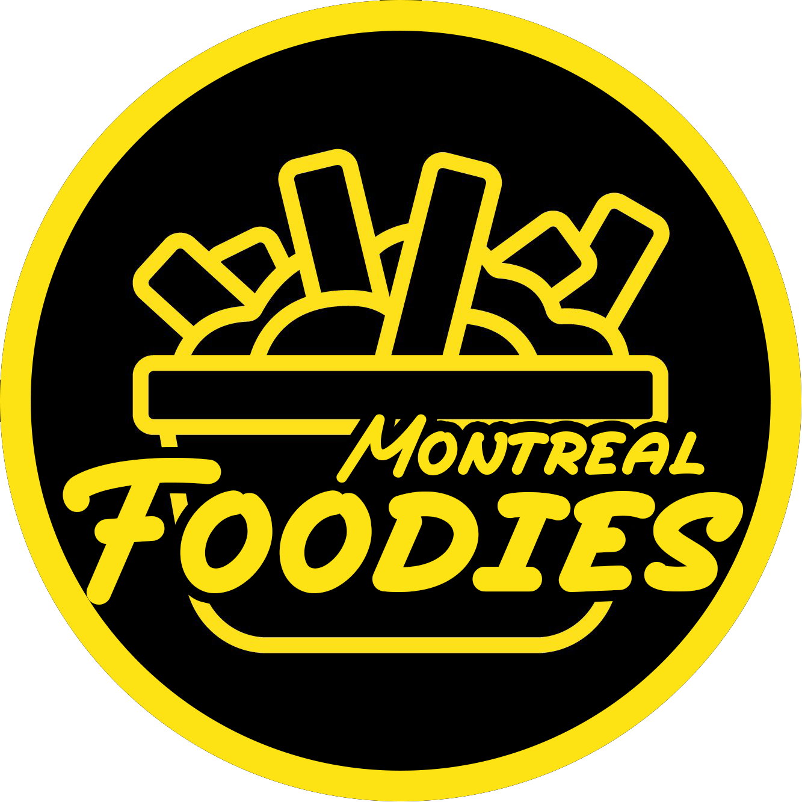

Montreal Foodies
Burger
Poutine
Pizza
Type of Cuisine
North America
Chinese
Sushi
Korean
Indian
Thai
Italian
African and Jamaican
Middle Eastern
Deserts
African and Jamaican
Restaurant Queen Sheba
Akwaba
Nilbleu Resturant
Diolo Traiteur
La Cuisine de Bunmi
Tropikal
DJ POULET
Palme
Grillade Lafirenzé Plus
Mokili
Founders of Montreal Foodies:
Jason Saychareun & Musab b. Umair